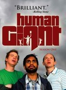

Human Giant
Stephen Klancher
...has seen 8
...has seen 0.1 hours
...has not seen 0.1 hours

Timeline
Most Recent:
Kneel Before Zerg
First Unseen:
Duffel Bag of Death (# 9)
...has seen 8
...has seen 0.1 hours
...has not seen 0.1 hours
Timeline
Most Recent:
Kneel Before Zerg
First Unseen:
Duffel Bag of Death (# 9)
